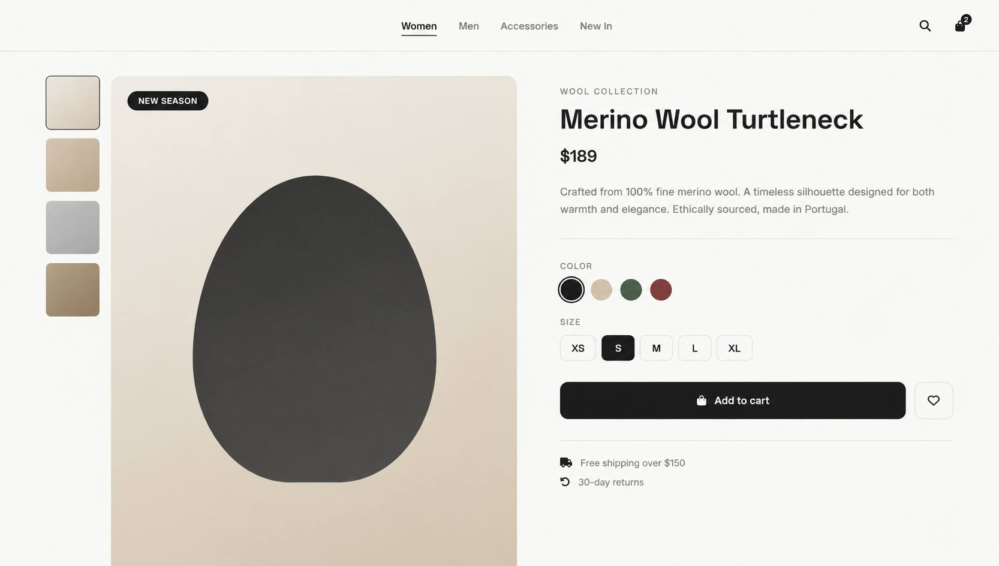

Keenwiix Store
A modern concept store for quiet essentials — timeless pieces, honest pricing, and a shopping experience built on calm.
View live demo
Project Overview
Keenwiix Store is a concept e-commerce platform for a modern fashion label. The project explores how a store can feel calm, editorial, and premium — without the usual noise of online shopping. Every element is designed with intention: fewer features, more clarity.
Problem
Modern e-commerce is loud. Pop-ups, urgency banners, aggressive upsells — everything fights for attention. The result is that shopping feels stressful instead of pleasurable. Premium brands lose their voice when they shout.
- Online stores feel noisy and overwhelming
- Too much urgency kills premium feel
- Product pages are cluttered with features
- Shopping loses the joy of browsing
Research & Discovery
I analyzed the world's best concept stores — from Muji to COS to Arket — and studied what makes their digital presence feel calm and confident. The pattern was clear: less noise, more whitespace, editorial storytelling.
Competitive Analysis
Reviewed 10+ premium stores
User Feedback
Analyzed common frustrations
Pattern Research
Identified calm shopping patterns
Ideation
Explored editorial store design
Key Insights
- Quiet stores feel more premium
- Editorial layouts build brand trust
- Fewer products → more focus
- Story matters more than urgency
Design Process
Concept & Direction
Defined a calm-first e-commerce approach — no pop-ups, no urgency, only story.
Information Architecture
Structured the store around a single editorial narrative: hero → featured → categories → story.
Visual Design
Chose a dark monochrome palette with editorial typography — quiet, confident, premium.
Prototyping
Built an interactive prototype to test the browsing and cart flow.
Development
Implemented with HTML/CSS/JS — pure, fast, accessible, and fully responsive.
Solution
A concept store that treats shopping like reading a magazine — calm, editorial, and intentional.
Editorial Layout
Story-driven homepage with magazine-style sections
Featured Pieces
Curated highlights instead of overwhelming grids
Quiet Cart
Simple, minimal cart — no aggressive upsells
Newsletter
Story-driven subscription, not pressure
Results & Impact
"A store that feels like a quiet boutique — not a marketplace. Shopping finally feels calm again."— Concept Reflection
Lessons Learned
- Quiet design is a competitive advantage
- Editorial storytelling works for commerce
- Fewer products → more attention per product
- Motion should feel gentle, never demanding